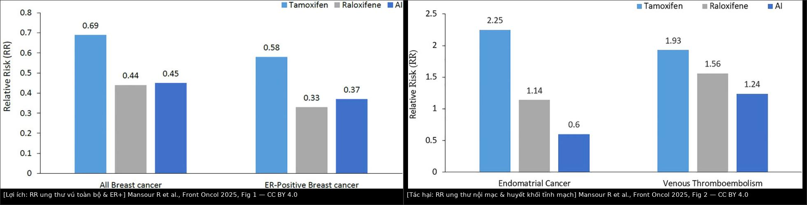
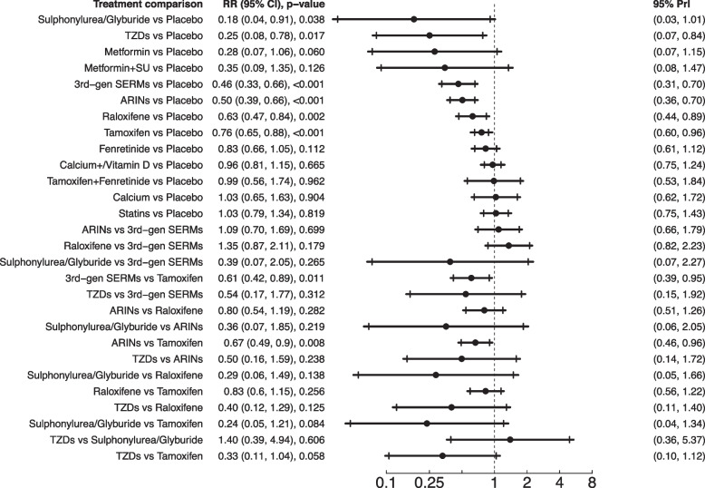

594 — Hóa dự phòng ung thư vú nguy cơ cao: chọn thuốc theo mãn kinh, ngưỡng nguy cơ & theo dõi độc tính / Endocrine chemoprevention of breast cancer
Tags: pattern:nguy-co-cao pattern:hoa-du-phong vung:vu score:Gail-BCRAT score:IBIS-TyrerCuzick score:ASCO-nguy-co protocol:tu-van-nguy-co protocol:MRI-vu anatomy:mo-tuyen-vu
Mức chắc chắn (certainty): tổng hợp y văn (literature synthesis) — nhóm tự biên từ 3 bài tổng quan/toàn văn mở CC BY (Mansour R et al., Front Oncol 2025, PMC12209358; Manna EDF et al., Healthcare 2023, PMC10454363; Pourali G et al., Breast Cancer Res 2025, PMC12211815) + số liệu thử nghiệm gốc được các bài này trích lại (NSABP P-1, IBIS-I, MORE/CORE, RUTH, STAR, MAP.3, IBIS-II, TAM-01, USPSTF 2019). Ảnh: 2 khung CC BY 4.0 được ghép + 1 khung CC BY-NC-ND giữ nguyên bản.
Bài này KHÔNG dạy đọc ảnh vú, mà dạy bước trước chẩn đoán: ai đủ ngưỡng nguy cơ để uống thuốc, uống thuốc nào, và theo dõi gì. Bác sĩ CĐHA là người (a) đo mật độ/BPE, (b) chạy mô hình nguy cơ, (c) phát hiện tác dụng phụ trên ảnh — nên cần biết ngưỡng ở đây.
1. Tổng quan — vì sao chỉ có 4 thuốc, và vì sao "ER+ mới giảm"
Bản chất: ~70–75% ung thư vú là ER+ (thụ thể estrogen dương). Estrogen là "nhiên liệu" tăng sinh tế bào biểu mô tuyến; hóa dự phòng nội tiết cắt nhiên liệu đó ở 2 điểm khác nhau:
- SERM (tamoxifen, raloxifene) — chiếm/thay đổi cấu hình thụ thể ER ở mô vú → đối kháng tại vú (nhưng đồng vận tại xương/tử cung: tamoxifen giữ xương nhưng kích nội mạc; raloxifene chọn lọc hơn → ít nội mạc).
- Ức chế aromatase (AI: anastrozole, exemestane) — chặn enzym chuyển androgen → estrogen ở mô ngoại vi (mỡ, cơ, gan). Hệ quả số 1: ở phụ nữ tiền mãn kinh, buồng trứng vẫn sản xuất estrogen theo chu kỳ và không phụ thuộc aromatase ngoại vi → AI không đủ hiệu quả (còn có thể kích buồng trứng); AI chỉ dùng cho hậu mãn kinh.
Vì sao lợi ích chỉ nằm ở ER+: cả 3 nhóm thuốc đều can thiệp trục estrogen → giảm mạnh ER+, không giảm ER−/triple-negative (P-1: ER+ giảm 69%, ER− không đổi). Đây là lý do phải nói rõ với bệnh nhân: "thuốc này không phòng được ung thư vú thể ba âm".
Ngưỡng định lượng — lợi ích (RR, theo bài tổng quan CC BY PMC12209358, Fig 1):
- Tamoxifen: RR toàn bộ 0,69 — ER+ 0,58 (P-1, IBIS-I, Royal Marsden, Italian).
- Raloxifene: RR toàn bộ 0,44 — ER+ 0,33 (MORE/CORE, RUTH, STAR).
- AI (anastrozole/exemestane): RR toàn bộ 0,45 — ER+ 0,37 (IBIS-II, MAP.3).
Ngưỡng định lượng — tác hại (cùng nguồn, Fig 2):
- Tamoxifen: ung thư nội mạc tử cung 2,25; VTE 1,93.
- Raloxifene: nội mạc 1,14; VTE 1,56.
- AI: nội mạc 0,60; VTE 1,24.
Số tuyệt đối (đừng chỉ nói RR): P-1 (13.388 phụ nữ, tamoxifen 20 mg/ngày × 5 năm): ung thư vú xâm lấn 42,5 → 24,8/1000 phụ nữ (RR 0,57; 0,46–0,70). MAP.3 (4.560 phụ nữ, exemestane): NNT 94 trong 3 năm và 26 trong 5 năm để tránh 1 ung thư xâm lấn. TAM-01 (liều nhỏ 5 mg/ngày): NNT 22 trong 5 năm, 14 trong 10 năm.
TẠI SAO hình ảnh học lại liên quan (cơ chế):
- Mật độ tuyến (FGT) giảm dưới tamoxifen/AI → nhũ ảnh nhạy hơn, nhưng đừng đọc "mật độ giảm = lành"; ngược lại, mật độ tăng khi dùng HRT.
- BPE (tăng ngấm mô tuyến nền) sụp về "minimal" khi dùng tamoxifen → MRI dễ đọc hơn nhưng dễ bỏ sót tổn thương ngấm yếu vì nền phẳng; xem 595.
- Tử cung: tamoxifen làm dày nội mạc/dịch trong buồng ở một tỉ lệ — đây là tác dụng thuốc, không phải bệnh lý nội mạc; chỉ sinh thiết khi chảy máu bất thường (xem 525).
Phản biện (fidelity + critique): hai con số "RR" hay bị trộn —
- Bài tổng quan PMC12209358 báo tamoxifen 0,69 / raloxifene 0,44 / AI 0,45 (gộp theo nhóm thuốc, thời gian theo dõi dài).
- NMA 43 RCT, 337.240 phụ nữ (PMC12211815) báo tamoxifen 0,76 / raloxifene 0,63 / AI 0,50 (NNT tương ứng 149,7 / 96,9 / 73,0). Khác biệt do bộ thử nghiệm + thời gian + mô hình gộp khác nhau, không phải mâu thuẫn sinh học → khi trích phải ghi rõ nguồn nào.
- NMA còn xếp sulfonylurea (RR 0,18) và thiazolidinedione (RR 0,25) lên đầu bảng SUCRA — nhưng đây là tín hiệu thứ cấp từ ít thử nghiệm, không phải chỉ định dự phòng → không dùng để kê thuốc đái tháo đường cho người khỏe mạnh.

Trái: RR ung thư vú (toàn bộ và ER+) của tamoxifen 0,69/0,58, raloxifene 0,44/0,33, AI 0,45/0,37. Phải: RR tác hại — ung thư nội mạc 2,25/1,14/0,60 và VTE 1,93/1,56/1,24. Đọc cặp hình này cùng nhau: raloxifene/AI đổi "ít nội mạc hơn" lấy "ít lợi ích hơn tamoxifen" (và AI có giá trị cao nhất cho ER+ nhưng chỉ hậu mãn kinh). Ảnh ghép letterbox, CC BY 4.0 (Mansour R et al., Front Oncol 2025, Fig 1 + Fig 2, PMC12209358).2. Mẫu hình (pattern) + chẩn đoán phân biệt theo bối cảnh (Gamut)
"Cùng một câu hỏi — người này có nên uống thuốc dự phòng? — nhưng gamut đổi theo trạng thái mãn kinh, bệnh nền và nhu cầu sinh sản":
- Khuôn 1 — Tiền mãn kinh, còn nhu cầu sinh sản: chỉ tamoxifen là lựa chọn được chứng minh (AI không dùng). Bàn thêm: liều nhỏ 5 mg/ngày (TAM-01) khi lo tác dụng phụ. Nếu đang mong con → hoãn/không dùng, tư vấn sau sinh.
- Khuôn 2 — Hậu mãn kinh, không loãng xương: AI (anastrozole 1 mg hoặc exemestane 25 mg) là ưu tiên hiệu quả cao nhất; tamoxifen nếu lo xương; raloxifene nếu cần "một mũi hai đích" (xương + vú) và sợ nội mạc.
- Khuôn 3 — Hậu mãn kinh + loãng xương/nguy cơ gãy xương: raloxifene 60 mg (giảm gãy đốt sống RR 0,61; 7 ca/1000 phụ nữ) hoặc tamoxifen (giữ mật độ xương) — tránh AI nếu xương mỏng vì AI gây đau khớp và giảm mật độ.
- Khuôn 4 — Tiền sử VTE / đang bất động / béo phì nặng / hút thuốc: tránh SERM (VTE RR 1,93 tamoxifen; 1,56 raloxifene); AI là lựa chọn an toàn hơn về VTE (RR 1,24) — nhưng phải hậu mãn kinh.
- Khuôn 5 — Tiền sử ung thư nội mạc tử cung / chảy máu tử cung bất thường / đang dùng estrogen đơn thuần: tránh tamoxifen; chọn AI hoặc raloxifene (RR nội mạc 0,60 và 1,14).
- Khuôn 6 — ADH/ALH, LCIS, DCIS đã cắt toàn tuyến: nhóm lợi ích tuyệt đối lớn nhất (P-1: ALH/ADH RR 0,14; LCIS RR 0,44) → nên chủ động mời hóa dự phòng, đừng chờ "nguy cơ 5 năm ≥ 3%".
- Khuôn 7 — Mang BRCA1/2 hoặc TP53: hóa dự phòng không thay phẫu thuật giảm nguy cơ; dữ liệu yếu và chia thể: một nghiên cứu hồi cứu (935 bệnh nhân) thấy AI giảm ung thư vú đối bên HR 0,44 ở người mang đột biến, còn tamoxifen không có lợi ích rõ; denosumab đang thử (BRCA-P). → ưu tiên tư vấn RRM/RRSO + theo dõi MRI (bài 524).
- Gợi nhớ "AGE-DOSE-5": Age ≥ 35, Gail/IBIS đủ ngưỡng, Estrogen status (chỉ ER+ hưởng lợi), DOSE theo mãn kinh, 5 năm — Observe (theo dõi) tác dụng phụ, Skip nếu VTE/nội mạc, End imaging (nhũ ảnh ± MRI nền).
3. Bảng so sánh phân biệt (ma trận đối chiếu)
| Thực thể (entity) | Liều & đối tượng | Chốt vào (rule-in) | Chốt loại (rule-out) | Gợi ý xác nhận |
|---|---|---|---|---|
| Tamoxifen | 20 mg/ngày × 5 năm; ≥ 35 tuổi, tiền hoặc hậu mãn kinh | Tiền mãn kinh cần dự phòng; loãng xương; ADH/LCIS | Tiền sử VTE, ung thư nội mạc, chảy máu tử cung bất thường, đục thủy tinh thể nặng → loại | RR toàn bộ 0,69 (ER+ 0,58); theo dõi VTE 3 tháng đầu và nội mạc |
| Tamoxifen liều nhỏ | 5 mg/ngày (TAM-01) | Sợ tác dụng phụ nhưng vẫn muốn dự phòng; IEN/LCIS/DCIS nhạy cảm hormone sau mổ | Nguy cơ rất cao (BRCA) → liều chuẩn/phẫu thuật | HR 0,58 (0,35–0,95); NNT 22 (5 năm); không tăng biến cố nặng |
| Raloxifene | 60 mg/ngày × 5 năm; chỉ hậu mãn kinh | Hậu mãn kinh + loãng xương; sợ ung thư nội mạc | Tiền mãn kinh (không có chỉ định dự phòng vú); tiền sử VTE | RR 0,44; gãy đốt sống RR 0,61; VTE 1,56 |
| Anastrozole | 1 mg/ngày × 5 năm; chỉ hậu mãn kinh | Hậu mãn kinh, xương tốt, ưu tiên hiệu quả + ít nội mạc/VTE | Tiền mãn kinh; loãng xương/đau khớp nặng | IBIS-II: HR 0,47 (5 năm), 0,51 (dài hạn); tăng huyết áp RR 1,64 |
| Exemestane | 25 mg/ngày × 5 năm; chỉ hậu mãn kinh | Hậu mãn kinh; ưu tiên "không đụng nội mạc" | Tiền mãn kinh; bệnh khớp hoạt động | MAP.3: HR 0,35 (0,18–0,70); NNT 26 (5 năm) |
| Cắt tuyến vú dự phòng hai bên (RRM) | Phẫu thuật | BRCA1/2, TP53, nguy cơ trọn đời rất cao | Nguy cơ trung bình; không muốn mổ | RR 0,11 (0,04–0,32) nhưng không giảm tử vong chung (bài 524) |
| Cắt hai phần phụ dự phòng (RRSO) | Phẫu thuật | BRCA1/2 sau khi xong sinh sản | Không mang đột biến | RR 0,55 (0,45–0,68) (bài 524) |
| Can thiệp lối sống | Cân nặng, vận động, rượu | Mọi phụ nữ (nền tảng, không thay thuốc) | — | Tuân thủ ≥ 5 khuyến cáo WCRF/AICR: HR 0,40 (0,25–0,65) |
- Cặp hình để nhớ:
images/composite_loi-ich-tac-dung.jpg(mục 1) — lợi ích bên trái, tác hại bên phải, cùng một thang RR → nhìn "khoảng cách giữa 2 cột" mới thấy thuốc nào đáng uống ở người nào.

Forest plot NMA: mỗi hàng là một so sánh, chấm = RR, gạch = 95% CI, đường đứt = 1,0. Ba thuốc "có tên trong hướng dẫn" (tamoxifen 0,76, raloxifene 0,63, AI 0,50) đều nằm bên trái đường 1; các hàng sulfonylurea/TZD nằm xa nhất nhưng chỉ vài thử nghiệm → tín hiệu, không phải chỉ định. Nguồn: Pourali G et al., Breast Cancer Res 2025, Fig 3, CC BY-NC-ND 4.0 (giữ nguyên bản).4. Protocol: ngưỡng nguy cơ, chọn thuốc, lịch theo dõi + lưu đồ
- Bước 1 — Định lượng nguy cơ (bắt buộc trước khi kê): dùng BCRAT (Gail 2.0) cho 5 năm và IBIS/Tyrer-Cuzick cho 10 năm; ghi cả hai vì ngưỡng chỉ định khác nhau. Độ chính xác mô hình chỉ AUC 0,55–0,65 ở đa số nghiên cứu (chỉ một số đạt > 0,70) → nguy cơ là công cụ tư vấn, không phải chẩn đoán.
- Bước 2 — Ngưỡng "đủ vào" (ASCO 2019, trích qua PMC10454363):
- ADH/ALH hoặc LCIS (bất kỳ tuổi ≥ 35), hoặc
- nguy cơ 5 năm ≥ 3% (BCRAT/NCI), hoặc
- nguy cơ 10 năm ≥ 5% (IBIS/Tyrer-Cuzick), hoặc
- RR ≥ 4 lần dân số ở tuổi 40–44, RR ≥ 2 lần ở tuổi 45–69.
- Tuổi tối thiểu 35 — dưới 35 chưa có bằng chứng.
- Lưu ý cạm bẫy số học: ngưỡng 1,66% là tiêu chuẩn vào thử nghiệm (P-1, STAR, MAP.3), không phải ngưỡng lợi ích hiện hành — dùng 1,66% để kê thuốc là điều trị thừa.
- Bước 3 — Chọn thuốc (theo mãn kinh trước, bệnh nền sau): xem lưu đồ dưới.
- Bước 4 — Thời gian: 5 năm là chuẩn (mọi thử nghiệm lớn). Lợi ích kéo dài sau khi ngừng: IBIS-I ở 16 năm vẫn HR 0,71 (0,60–0,83); không giảm tử vong chung (OR 1,10; 0,88–1,37) → tư vấn đúng: giảm mắc bệnh, chưa chứng minh giảm chết.
- Bước 5 — Theo dõi (lịch cụ thể):
- Trước điều trị: nhũ ảnh/DBT nền (nếu chưa có trong 12 tháng); MRI vú nếu thuộc nhóm nguy cơ cao có chỉ định (bài 524); cân nặng/BMI, huyết áp, đánh giá nguy cơ VTE (tiền sử, béo phì, bất động, thuốc), mật độ xương (DXA) nếu cân nhắc AI ở người > 60 tuổi hoặc có yếu tố loãng xương.
- 3 tháng đầu: hỏi đau/nề cẳng chân, khó thở, đau ngực (VTE hay xảy ra sớm, đặc biệt ≥ 50 tuổi — P-1: PE RR 3,19 ở nhóm ≥ 50).
- Hằng năm: nhũ ảnh/DBT theo lịch tầm soát; hỏi chảy máu âm đạo bất thường (tamoxifen); đau khớp/carpal tunnel (AI); cataract (tamoxifen RR 1,22; raloxifene ít hơn, RR 0,79 so tamoxifen); loãng xương (AI — DXA mỗi 2 năm).
- Không siêu âm nội mạc định kỳ ở người không triệu chứng dùng tamoxifen (nội mạc dày/dịch là tác dụng thuốc, dễ dẫn tới sinh thiết oan); siêu âm ± sinh thiết chỉ khi chảy máu bất thường.
- Bước 6 — Khi nào ngừng sớm: VTE/PE, ung thư nội mạc hoặc chảy máu bất thường chưa giải thích (tamoxifen), đau khớp mức độ nặng/không dung nạp (AI), có thai, hoặc bệnh nhân không muốn tiếp tục (tuân thủ thực tế 16,3% tổng gộp; 8,7% ngoài thử nghiệm).
flowchart TD
A[Phụ nữ từ 35 tuổi hỏi về dự phòng ung thư vú] --> B{ADH/ALH, LCIS hoặc đủ ngưỡng nguy cơ?}
B -->|Không| C[Tư vấn lối sống + tầm soát theo nguy cơ, không kê thuốc]
B -->|Có| D{Tiền mãn kinh?}
D -->|Có| E[Tamoxifen 20 mg/ngày x 5 năm]
E --> E1{Sợ tác dụng phụ hoặc IEN sau mổ?}
E1 -->|Có| E2[Cân nhắc tamoxifen 5 mg/ngày - NNT 22 trong 5 năm]
E1 -->|Không| E3[Theo dõi VTE 3 tháng đầu, hỏi chảy máu tử cung hằng năm]
D -->|Không - hậu mãn kinh| F{Bệnh nền nào?}
F -->|Tiền sử VTE hoặc ung thư nội mạc| G[Ưu tiên AI: anastrozole 1 mg hoặc exemestane 25 mg]
F -->|Loãng xương hoặc cần bảo vệ xương| H[Raloxifene 60 mg - gãy đốt sống RR 0,61]
F -->|Xương tốt, ưu tiên hiệu quả| G
G --> G1[Theo dõi đau khớp, huyết áp RR 1,64, DXA mỗi 2 năm]
H --> H1[Theo dõi VTE RR 1,56 - không dùng ở tiền mãn kinh]
E3 --> I{Sau 5 năm}
G1 --> I
H1 --> I
I --> J[Kết thúc thuốc - lợi ích còn kéo dài: IBIS-I HR 0,71 ở 16 năm]
J --> K[Vẫn tiếp tục tầm soát hình ảnh theo bài 524]
Dùng làm bảng "tra nhanh" khi tư vấn: nếu bệnh nhân chỉ nhìn cột lợi ích sẽ thấy AI "thắng"; nhưng ở người tiền mãn kinh AI không có chỉ định, và ở người loãng xương thì raloxifene/tamoxifen lại đúng hơn. Ảnh ghép letterbox, CC BY 4.0 (Mansour R et al., Front Oncol 2025, PMC12209358).
5. Biến thể bình thường và cạm bẫy
- Cạm bẫy 1 — "1,66% là đủ": 1,66% là ngưỡng vào thử nghiệm; ngưỡng tư vấn hiện hành là 5 năm ≥ 3% hoặc 10 năm ≥ 5%. Kê thuốc cho người 1,7% = hại nhiều hơn lợi.
- Cạm bẫy 2 — "AI dùng được cho mọi phụ nữ": AI ở tiền mãn kinh không hiệu quả (buồng trứng còn sản xuất estrogen) — đây là lỗi chỉ định, không phải "liều yếu".
- Cạm bẫy 3 — "giảm nguy cơ = giảm tử vong": IBIS-I không giảm tử vong chung; đừng bán hy vọng quá mức. Ngược lại, đừng vì thế mà bỏ qua lợi ích giảm mắc bệnh + giảm nhũ ảnh phải sinh thiết.
- Cạm bẫy 4 — nội mạc trên siêu âm: tamoxifen gây dày nội mạc / nang tuyến / dịch buồng ở tỉ lệ đáng kể; ở người không chảy máu, hình ảnh này không đủ chỉ định sinh thiết (nguy cơ can thiệp oan). Ngưỡng hành động là triệu chứng, không phải mm.
- Cạm bẫy 5 — mật độ/BPE thay đổi do thuốc: dưới tamoxifen, BPE về minimal và mật độ giảm → ảnh "sạch" giả tạo; đừng kết luận "không còn nguy cơ". Ngược lại, HRT làm tăng mật độ và BPE → tăng dương tính giả (bài 595). BPE không phải FGT: FGT là cấu trúc, BPE là chức năng.
- Cạm bẫy 6 — mang đột biến BRCA mà chỉ uống thuốc: hóa dự phòng không thay RRM/RRSO; dữ liệu ở BRCA mỏng (P-1 chỉ có 8 BRCA1 + 11 BRCA2 trong số 288 ca) → đừng trấn an bằng "đã uống tamoxifen rồi".
- Cạm bẫy 7 — đọc NMA như bảng kê đơn: sulfonylurea/TZD đứng đầu SUCRA nhưng dựa trên rất ít thử nghiệm và kết cục phụ → nếu trích, phải ghi "tín hiệu, chưa có chỉ định".
- Cạm bẫy 8 — bỏ quên thuốc tương tác: tamoxifen là ức chế CYP2D6 yếu (và chịu ảnh hưởng của CYP2D6) → cân nhắc với SSRI mạnh (paroxetine, fluoxetine) và thuốc chống đông (tăng INR); AI không có vấn đề này nhưng tương tác mạnh với estrogen (không dùng cùng estrogen).
6. Tự lượng giá — Blind Quiz
Ca 1 — Nữ 46 tuổi, tiền mãn kinh, sinh thiết ADH, 5 năm nguy cơ 2,4% (BCRAT), 10 năm 5,8% (IBIS). Chị hỏi "có thuốc nào phòng được không?". Đọc biểu đồ lợi ích/tác hại.
- Hỏi: chị có đủ ngưỡng không (dùng ngưỡng nào)? Thuốc nào được phép ở trạng thái mãn kinh này? Hai tác hại nào phải hỏi trước khi kê?
Bấm để hiện đáp án (findings + chẩn đoán)
- Đủ ngưỡng: có — ADH là tiêu chuẩn độc lập, và nguy cơ 10 năm 5,8% ≥ 5% (IBIS). Nguy cơ 5 năm 2,4% dưới 3% nên một mình con số Gail sẽ không đủ → bài học: phải chạy cả hai mô hình.
- Thuốc được phép: tamoxifen 20 mg/ngày × 5 năm (hoặc 5 mg/ngày nếu lo tác dụng phụ — TAM-01 NNT 22 trong 5 năm). Raloxifene và AI bị loại vì tiền mãn kinh.
- Hai tác hại phải hỏi: tiền sử VTE (RR 1,93; PE RR 3,19 ở ≥ 50 tuổi, sớm trong 3 năm đầu) và bất thường tử cung/chảy máu (ung thư nội mạc RR 2,25).
- Nguồn ảnh: Mansour R et al., Front Oncol 2025, Fig 1–2, CC BY 4.0 (ảnh ghép letterbox).
Ca 2 — Nữ 61 tuổi, hậu mãn kinh, mật độ vú C, DXA bình thường, mẹ bị ung thư vú. IBIS 10 năm 6,2%. Chị sợ "thuốc gây ung thư tử cung".
- Hỏi: hai lựa chọn nào không đụng nội mạc? Chọn cái nào khi xương bình thường? Con số nào trong hình chứng minh điều đó?
Bấm để hiện đáp án (findings + chẩn đoán)
- Không đụng nội mạc: AI (ung thư nội mạc RR 0,60) và raloxifene (RR 1,14).
- Chọn: anastrozole 1 mg/ngày × 5 năm (IBIS-II HR 0,47; dài hạn 0,51) hoặc exemestane 25 mg (MAP.3 HR 0,35, NNT 26), vì hiệu quả ER+ cao nhất và xương bình thường. Nếu sau này loãng xương → chuyển raloxifene (gãy đốt sống RR 0,61).
- Theo dõi: đau khớp/carpal tunnel, huyết áp (RR 1,64 với anastrozole), DXA mỗi 2 năm; không cần siêu âm nội mạc.
- Nguồn ảnh: Pourali G et al., Breast Cancer Res 2025, Fig 3, CC BY-NC-ND 4.0 (giữ nguyên bản).
Ca 3 — Bác sĩ hỏi lại: "Bệnh nhân 52 tuổi, 5 năm 1,9%, chị muốn uống tamoxifen vì 'hàng xóm cũng uống'. Kê không?"
Bấm để hiện đáp án (findings + chẩn đoán)
- Không kê (chưa đủ ngưỡng): 1,9% vượt 1,66% (ngưỡng thử nghiệm) nhưng dưới 3% (ngưỡng lợi ích ASCO). Cần kiểm tra thêm IBIS 10 năm và RR so dân số trước khi kết luận.
- Nếu 10 năm ≥ 5% hoặc có ADH/LCIS → đủ ngưỡng, kê được. Nếu không → tư vấn lối sống + tầm soát; hẹn đánh giá lại khi có biến cố mới (mật độ tăng, sinh thiết lành tính có tăng sinh).
- Bài học: RR tương đối nghe rất mạnh (giảm 31%) nhưng tuyệt đối nhỏ ở người nguy cơ thấp — cùng một thuốc, NNT 22 (nguy cơ cao) vs NNT > 150 (nguy cơ thấp).
Bài liên quan chéo
- 500 – Tổng quan Hệ Vú & Sản Phụ khoa
- 510 – Vú: BI-RADS nhũ ảnh – siêu âm – MRI
- 524 – Sàng lọc & quản lý nguy cơ cao ung thư vú (ngưỡng nguy cơ, MRI tầm soát, RRM/RRSO)
- 595 – BPE trên MRI vú: phân độ & xử lý dương tính giả (thuốc làm BPE sụp về minimal)
- 525 – Ung thư nội mạc tử cung: FIGO & MRI (tác dụng phụ nội mạc của tamoxifen)
- 522 – Theo dõi sau điều trị ung thư vú
- 199 – Quy trình xét nghiệm gen & tầm soát gia đình
Ảnh
images/594_loi-ich_PMC12209358.jpg,images/594_tac-dung_PMC12209358.jpg(CC BY 4.0 — dùng để ghép),images/composite_loi-ich-tac-dung.jpg(tác phẩm phái sinh CC BY),images/594_NMA-13-thuoc_PMC12211815.jpg(CC BY-NC-ND — giữ nguyên bản). Nguồn + giấy phép từng ảnh trongimages/CREDITS.md.- Không tải: AuntMinnie (paywall) — chỉ dẫn link trong
sources.md.
Không dùng để chẩn đoán độc lập khi chưa có người hướng dẫn.